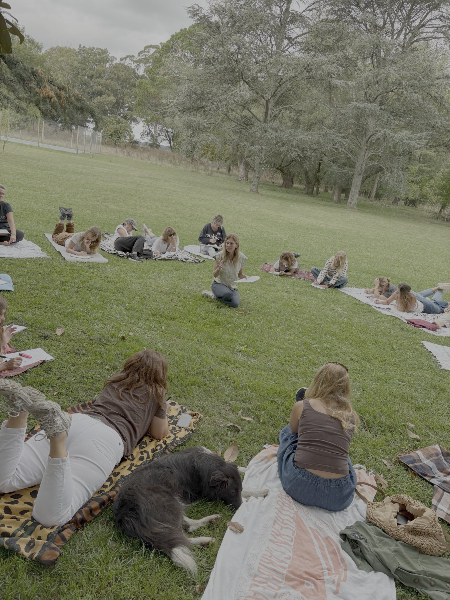

Dos experiencias para salir de lo cotidiano, habitar la naturaleza y compartir un camino de transformación junto a otras mujeres.
Aire, pausas, tierra bajo los pies y un grupo que te sostiene.
23 · 24 · 25 de octubre
Un espacio para bajar el ritmo, conectar con vos y disfrutar en comunidad.
Quiero saber más
20 · 21 · 22 de noviembre
Dos días para expandirte, mirarte con otros ojos y compartir un camino profundo en comunidad.
Quiero saber másEl viaje de expansión fue una oportunidad para seguir ahondando en mi interior y descubrir que no puedo dar lo que no conozco que soy y tengo. Conectar con esa luz interior para poder irradiarla a los demás.
Una experiencia divina, compartida con mujeres valientes y en un entorno mágico.
Un verdadero “spa para el alma”.
Fue una experiencia espectacular y muy movilizadora. Durante dos días pude desconectarme de lo cotidiano y conectarme conmigo misma desde otro lugar.
Me llevo momentos, charlas y emociones, además de muchas cosas para seguir pensando y descubriendo. Sentí que pude mirarme de otra manera, abrirme a nuevas posibilidades y disfrutar del proceso.
Lo más valioso fue haberme regalado ese tiempo para mí, y más aún en ese paraíso. Compartirlo con personas increíbles hizo que todo fuera aún más enriquecedor.
Gracias por crear este espacio y acompañarnos con tanta dedicación y amor. Me llevo mucho más de lo que imaginaba.
Una experiencia que generó un encuentro profundo con mi ser, en un lugar soñado donde vibra paz y amor. Un mimo al alma bien merecido.
Momentos de reflexión, escucha, introspección y disfrute. Un encuentro con pares que reflejaron las ganas de seguir trabajando en uno para crecer y transformar lo que nos pesa.
¡Quiero otro!
Cata, solo agradecer. El finde fue tan lindo. Tu amor a lo que nos diste fue inolvidable.
Gracias por tu paciencia y escucha. Gracias, gracias, gracias.
Para mí, este viaje de expansión fue una experiencia hermosa y especial.
Fueron dos días para parar, escucharnos, compartir nuestras historias, nuestras alegrías y también nuestras tristezas.
Entre charlas, oración, yoga, los caballos, las risas y muchas lágrimas, fuimos conectando desde un lugar muy genuino. Me encantó ver cómo, sin conocernos tanto, se formó un grupo lleno de cariño, confianza y mucha camaradería.
Me quedo con muchísimo de lo aprendido, con cada historia compartida, con los abrazos, las risas, el fuego de la noche y, sobre todo, con la sensación de que nunca estamos solas en lo que nos toca vivir.
Fue un verdadero regalo y una experiencia que me llevo en el corazón.

Escribinos y te contamos todos los detalles.
Quiero saber más